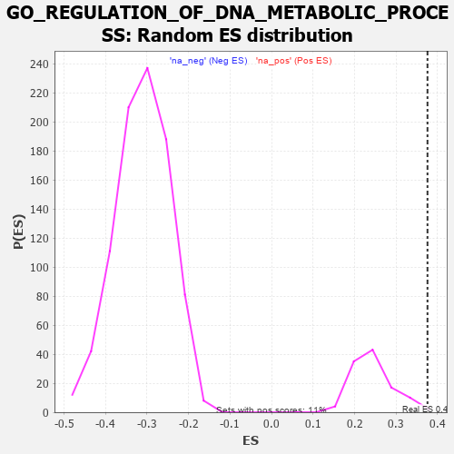

| | | Dataset | 7d |
| Phenotype | NoPhenotypeAvailable |
| Upregulated in class | na_pos |
| GeneSet | GO_REGULATION_OF_DNA_METABOLIC_PROCESS |
| Enrichment Score (ES) | 0.37565932 |
| Normalized Enrichment Score (NES) | 1.5401949 |
| Nominal p-value | 0.018018018 |
| FDR q-value | 0.25874984 |
| FWER p-Value | 1.0 |
Table: GSEA Results Summary
 Fig 1: Enrichment plot: GO_REGULATION_OF_DNA_METABOLIC_PROCESS
Fig 1: Enrichment plot: GO_REGULATION_OF_DNA_METABOLIC_PROCESS
Profile of the Running ES Score & Positions of GeneSet Members on the Rank Ordered List
| PROBE | GENE SYMBOL | GENE_TITLE | RANK IN GENE LIST | RANK METRIC SCORE | RUNNING ES | CORE ENRICHMENT | | 1 | H2AX | | | 20 | 4.738 | 0.1060 | Yes |
| 2 | SPI1 | | | 162 | 1.182 | 0.1151 | Yes |
| 3 | HGF | | | 276 | 0.870 | 0.1207 | Yes |
| 4 | GSK3A | | | 351 | 0.745 | 0.1284 | Yes |
| 5 | AXIN2 | | | 383 | 0.713 | 0.1408 | Yes |
| 6 | BAX | | | 387 | 0.711 | 0.1567 | Yes |
| 7 | NBN | | | 405 | 0.696 | 0.1704 | Yes |
| 8 | MLH1 | | | 423 | 0.679 | 0.1838 | Yes |
| 9 | ERCC1 | | | 453 | 0.660 | 0.1953 | Yes |
| 10 | WRN | | | 469 | 0.649 | 0.2082 | Yes |
| 11 | RFC2 | | | 488 | 0.635 | 0.2205 | Yes |
| 12 | THOC1 | | | 507 | 0.627 | 0.2326 | Yes |
| 13 | YLPM1 | | | 556 | 0.611 | 0.2405 | Yes |
| 14 | PARN | | | 660 | 0.572 | 0.2405 | Yes |
| 15 | RFC3 | | | 663 | 0.571 | 0.2533 | Yes |
| 16 | MRE11 | | | 693 | 0.560 | 0.2625 | Yes |
| 17 | BLM | | | 804 | 0.531 | 0.2607 | Yes |
| 18 | RFC4 | | | 815 | 0.528 | 0.2715 | Yes |
| 19 | RPA2 | | | 851 | 0.519 | 0.2789 | Yes |
| 20 | HDAC8 | | | 881 | 0.510 | 0.2869 | Yes |
| 21 | PARG | | | 884 | 0.509 | 0.2983 | Yes |
| 22 | STOX1 | | | 905 | 0.506 | 0.3074 | Yes |
| 23 | MEN1 | | | 1003 | 0.483 | 0.3061 | Yes |
| 24 | AKT1 | | | 1040 | 0.476 | 0.3124 | Yes |
| 25 | WDR70 | | | 1066 | 0.470 | 0.3200 | Yes |
| 26 | AIFM1 | | | 1072 | 0.469 | 0.3301 | Yes |
| 27 | DEK | | | 1088 | 0.466 | 0.3389 | Yes |
| 28 | RAD51 | | | 1090 | 0.466 | 0.3494 | Yes |
| 29 | SRC | | | 1128 | 0.459 | 0.3552 | Yes |
| 30 | KMT2A | | | 1130 | 0.458 | 0.3656 | Yes |
| 31 | TFDP1 | | | 1180 | 0.450 | 0.3697 | Yes |
| 32 | KAT7 | | | 1240 | 0.440 | 0.3723 | Yes |
| 33 | DKC1 | | | 1292 | 0.431 | 0.3757 | Yes |
| 34 | DACH1 | | | 1471 | 0.395 | 0.3621 | No |
| 35 | KDM1B | | | 1618 | 0.371 | 0.3520 | No |
| 36 | ERCC8 | | | 1699 | 0.357 | 0.3501 | No |
| 37 | ERCC2 | | | 1712 | 0.354 | 0.3567 | No |
| 38 | MRNIP | | | 1743 | 0.346 | 0.3608 | No |
| 39 | MSH2 | | | 1819 | 0.334 | 0.3589 | No |
| 40 | OTUB1 | | | 1857 | 0.326 | 0.3617 | No |
| 41 | PAK3 | | | 1889 | 0.322 | 0.3651 | No |
| 42 | MMS19 | | | 1924 | 0.317 | 0.3680 | No |
| 43 | POLH | | | 1983 | 0.307 | 0.3677 | No |
| 44 | HMCES | | | 2036 | 0.300 | 0.3680 | No |
| 45 | ATAD5 | | | 2197 | 0.277 | 0.3540 | No |
| 46 | CDK2 | | | 2226 | 0.272 | 0.3567 | No |
| 47 | XRCC1 | | | 2287 | 0.262 | 0.3550 | No |
| 48 | KDM1A | | | 2447 | 0.237 | 0.3403 | No |
| 49 | CDT1 | | | 2505 | 0.226 | 0.3382 | No |
| 50 | MBD3 | | | 2524 | 0.223 | 0.3410 | No |
| 51 | ARID2 | | | 2664 | 0.204 | 0.3280 | No |
| 52 | NSD2 | | | 2784 | 0.185 | 0.3172 | No |
| 53 | XRN1 | | | 2786 | 0.185 | 0.3213 | No |
| 54 | ATR | | | 2800 | 0.183 | 0.3238 | No |
| 55 | RTEL1 | | | 3010 | 0.148 | 0.3007 | No |
| 56 | TIGAR | | | 3091 | 0.138 | 0.2937 | No |
| 57 | CUL4A | | | 3097 | 0.137 | 0.2962 | No |
| 58 | OGG1 | | | 3135 | 0.132 | 0.2945 | No |
| 59 | SMG5 | | | 3285 | 0.108 | 0.2780 | No |
| 60 | RFC5 | | | 3389 | 0.091 | 0.2670 | No |
| 61 | UBR5 | | | 3518 | 0.074 | 0.2525 | No |
| 62 | MAPK3 | | | 3589 | 0.062 | 0.2450 | No |
| 63 | ZNF91 | | | 3595 | 0.061 | 0.2458 | No |
| 64 | DHX9 | | | 3693 | 0.044 | 0.2345 | No |
| 65 | HSF1 | | | 3718 | 0.039 | 0.2323 | No |
| 66 | SMG1 | | | 3843 | 0.021 | 0.2170 | No |
| 67 | NEK2 | | | 3871 | 0.016 | 0.2140 | No |
| 68 | EYA1 | | | 3987 | -0.006 | 0.1995 | No |
| 69 | PARP1 | | | 4014 | -0.010 | 0.1964 | No |
| 70 | MSH6 | | | 4129 | -0.028 | 0.1826 | No |
| 71 | SETD2 | | | 4443 | -0.084 | 0.1448 | No |
| 72 | ERCC6 | | | 4464 | -0.087 | 0.1442 | No |
| 73 | PINX1 | | | 4515 | -0.097 | 0.1401 | No |
| 74 | PNKP | | | 4572 | -0.111 | 0.1355 | No |
| 75 | MPV17 | | | 4575 | -0.112 | 0.1378 | No |
| 76 | GATA3 | | | 4614 | -0.120 | 0.1357 | No |
| 77 | ATRX | | | 4929 | -0.184 | 0.1001 | No |
| 78 | XRCC5 | | | 4946 | -0.187 | 0.1023 | No |
| 79 | PRKDC | | | 4955 | -0.189 | 0.1056 | No |
| 80 | KLF4 | | | 5005 | -0.198 | 0.1040 | No |
| 81 | DDX11 | | | 5102 | -0.225 | 0.0969 | No |
| 82 | FLCN | | | 5140 | -0.235 | 0.0976 | No |
| 83 | ATM | | | 5210 | -0.249 | 0.0945 | No |
| 84 | TNKS2 | | | 5239 | -0.254 | 0.0968 | No |
| 85 | RAD50 | | | 5314 | -0.276 | 0.0937 | No |
| 86 | CERS1 | | | 5518 | -0.325 | 0.0754 | No |
| 87 | NVL | | | 5572 | -0.338 | 0.0764 | No |
| 88 | GNL3 | | | 5614 | -0.349 | 0.0792 | No |
| 89 | SH2B1 | | | 5963 | -0.459 | 0.0455 | No |
| 90 | TNKS | | | 6138 | -0.516 | 0.0352 | No |
| 91 | RNF8 | | | 6147 | -0.518 | 0.0461 | No |
| 92 | RGN | | | 6233 | -0.547 | 0.0478 | No |
| 93 | UBE2N | | | 6407 | -0.621 | 0.0400 | No |
| 94 | PIF1 | | | 6604 | -0.713 | 0.0315 | No |
| 95 | EGFR | | | 6708 | -0.765 | 0.0359 | No |
| 96 | CDK9 | | | 7266 | -1.138 | -0.0088 | No |
| 97 | PARP3 | | | 7289 | -1.158 | 0.0150 | No |
| 98 | NEK7 | | | 7415 | -1.285 | 0.0285 | No |
| 99 | DCP2 | | | 7724 | -1.833 | 0.0314 | No |
Table: GSEA details [plain text format]

Fig 2: GO_REGULATION_OF_DNA_METABOLIC_PROCESS: Random ES distribution
Gene set null distribution of ES for GO_REGULATION_OF_DNA_METABOLIC_PROCESS